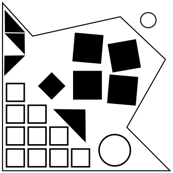
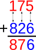
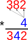
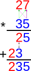

A Respeito da Dizimação
O números não mentam. Tá, de vez em quando mentem.
Ó céus.
Haverão dois números de 2 dígitos nos displays grandes e um operador pequeno. Realize a operação nos dois números e envie a resposta usando o teclado. Haverão três estágios.
- O primeiro estágio sempre será uma adição.
- O segundo estágio sempre será uma multiplicação por um só dígito.
- O terceiro estágio sempre será uma multiplicação.
Porém, as mecânicas evidentemente defeituosas deste módulo o fazem utilizar um sistema aritmético alterado. O módulo usará aritmética sombria, também conhecida como aritmética lunar, para realizar as suas operações.
Adição sombria é uma variante da adição normal em que ao adicionar dois dígitos, o resultado é o maior dos dois dígitos.
Multiplicação sombria é uma variante da multiplicação normal em que ao multiplicar dois dígitos, o resultado é o menor dos dois dígitos.
Note que propriedades comutativas, associativas e distributivas se aplicam aqui: a×(b+c) = a×b + a×c


